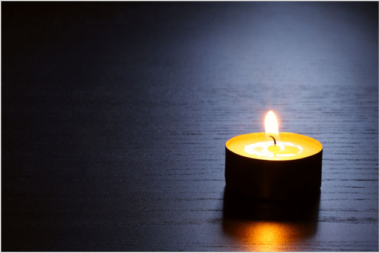
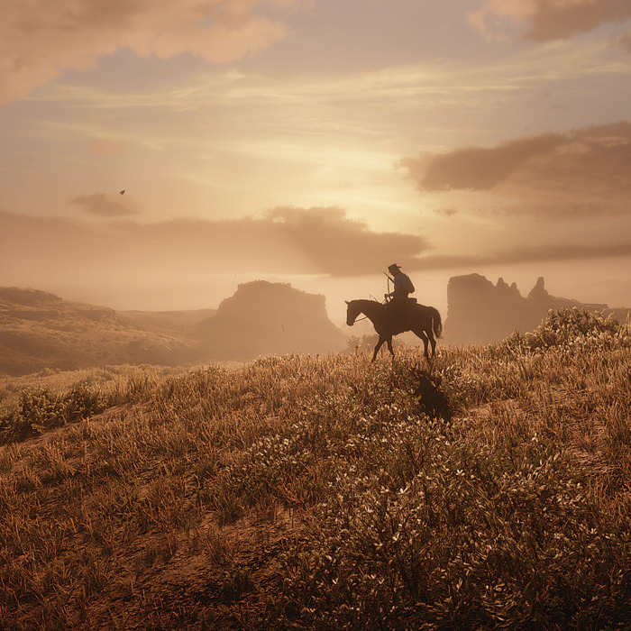

Remembering Lil Napkin

I remember the first moment I saw him. Like all outcasts before him, he stood out in a way most folks don't really understand. His gentle but awkward prance. His donkey-like grin and the way his eyes never seemed to be focused on any one thing at once. The world was mean to him. They’d laugh at his tangled mane and nibble at his tail when he bent his neck to drink from the brooke. Yet never, not once, did I see him admit defeat. Not once did he display outwardly the pain only he could know. And in the end, it was this resilience that, above all else, I know made him superior to the rest. In the end, I chose him.

Let him live on forever in our hearts.
At first, you were a wild little pony. I’m forced to admit that I certainly did overestimate my ability to tame you. You had a natural tendency to buck at the first sign of trouble. Gosh, the first time I pulled a pistol on a rattlesnake, you nearly threw me clean over the tops of the Sycamores. But I never gave up on you. Just as it turned out, you would never give up on me. With each passing day our rhythms became one, until I could whistle a note from across state lines and you’d come running like I was your damsel in distress. Now I know it was foolish to think you’d ever be the strongest workhorse or the fastest racer. But I’ll be damned if you didn’t have the heart of a drunkard and the soul of a piano man.

I thought we would grow old together, me and him. Me, Santa Clause; him, Rudolph. But life, just like Lil Napkin, is a truly unpredictable force, and after many a restful autumn, a ghostly winter, and a cheerful spring, one summer, he was gone. I can only hazily recall the last thing I said to him, but I think it must have gone something like, “Goddammit boy, get your dirty hooves out my beans.” or something to that effect. To others , he was a runt, out outcast, even an abomination. Something to blow your nose on or wipe your hands off on after a long day shoveling cow shit. But to me, he was a hero, a travel companion, a magic carpet, and a friend. Rest in peace Lil Napkin, your legacy will never be forgotten.